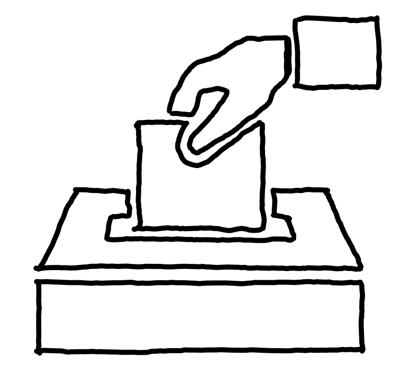

In einigen Dystopischen Romanen wird angesprochen, wie totale Überwachung durch die Regierung dazu führen kann, dass es keine Privatsphäre mehr gibt und die Freiheit der Menschen stark eingeschränkt wird.

Dazu kann eine korrupte Regierung für einen Verlust der Demokratie sorgen, sodass die Menschen weiter unterdrückt werden und ihre Meinungen nicht mehr frei äußern können, ohne mit Konsequenzen rechnen zu müssen.